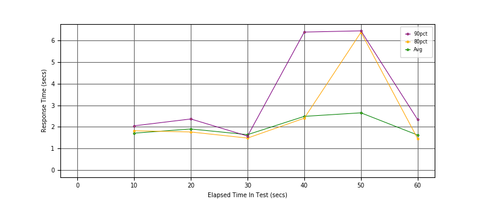
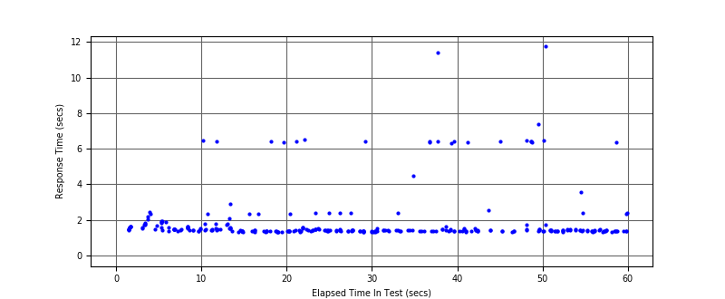
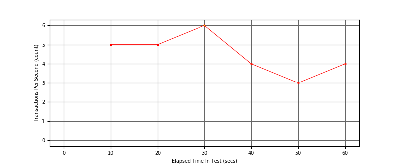

Performance Results Report
Summary
transactions: 309
errors: 0
run time: 60 secs
rampup: 0 secs
test start: 2017-09-04 11:28:42
test finish: 2017-09-04 11:29:40
time-series interval: 10 secs
workload configuration:
| group name | threads | script name |
|---|
| user_group-1 | 7 | regular_user.py |
| user_group-2 | 3 | intensive_user.py |
All Transactions
Transaction Response Summary (secs)
| count | min | avg | 80pct | 90pct | 95pct | max | stdev |
|---|
| 309 | 1.325 | 1.946 | 1.700 | 2.404 | 6.395 | 11.747 | 1.524 |
Interval Details (secs)
| interval | count | rate | min | avg | 80pct | 90pct | 95pct | max | stdev |
|---|
| 1 | 59 | 5.90 | 1.372 | 1.711 | 1.823 | 2.049 | 2.356 | 6.463 | 0.677 |
| 2 | 52 | 5.20 | 1.325 | 1.905 | 1.765 | 2.366 | 6.400 | 6.423 | 1.348 |
| 3 | 62 | 6.20 | 1.325 | 1.641 | 1.483 | 1.577 | 2.404 | 6.520 | 0.921 |
| 4 | 41 | 4.10 | 1.348 | 2.487 | 2.402 | 6.385 | 6.395 | 11.396 | 2.295 |
| 5 | 39 | 3.90 | 1.344 | 2.651 | 6.375 | 6.442 | 7.380 | 11.747 | 2.487 |
| 6 | 46 | 4.60 | 1.339 | 1.622 | 1.455 | 2.336 | 2.383 | 6.369 | 0.815 |
Graphs
Response Time: 10 sec time-series

Response Time: raw data (all points)

Throughput: 5 sec time-series

Custom Timer: Latency
Timer Summary (secs)
| count | min | avg | 80pct | 90pct | 95pct | max | stdev |
|---|
| 299 | 1.325 | 1.946 | 1.700 | 2.404 | 6.395 | 11.747 | 1.524 |
Interval Details (secs)
| interval | count | rate | min | avg | 80pct | 90pct | 95pct | max | stdev |
|---|
| 1 | 59 | 5.90 | 1.372 | 1.711 | 1.823 | 2.049 | 2.356 | 6.463 | 0.677 |
| 2 | 52 | 5.20 | 1.325 | 1.904 | 1.765 | 2.366 | 6.399 | 6.423 | 1.348 |
| 3 | 62 | 6.20 | 1.325 | 1.641 | 1.483 | 1.577 | 2.404 | 6.520 | 0.921 |
| 4 | 41 | 4.10 | 1.348 | 2.487 | 2.402 | 6.385 | 6.395 | 11.396 | 2.295 |
| 5 | 39 | 3.90 | 1.344 | 2.651 | 6.375 | 6.442 | 7.380 | 11.747 | 2.487 |
| 6 | 46 | 4.60 | 1.339 | 1.622 | 1.455 | 2.336 | 2.383 | 6.369 | 0.815 |
Graphs
Response Time: 10 sec time-series
Response Time: raw data (all points)

Throughput: 10 sec time-series